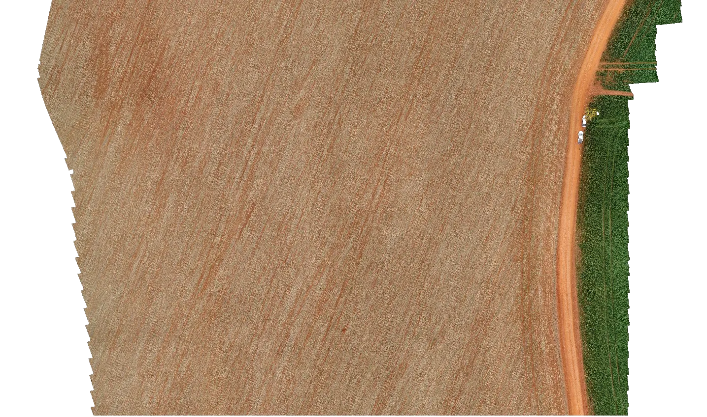

Quality requirements
The assertiveness of our service is directly linked to the quality of the images obtained in the crops, due to this correlation we created some requirements to guarantee the quality of your application.

What is GSD?
In literal translation, GSD would be the “distance of the soil sample”. This sample, in this case, is each pixel of the photo captured with the drone – when you apply the maximum possible zoom in a photo, it is possible to identify the pixels of the image, as in the examples at left.
| Maximum height | Minimum height | ||
|---|---|---|---|
| GSD | 0.82 Cm/Pixel | 0.27 Cm/Pixel |
|
| The lower the GSD, the better the quality of your result< /td> | |||

Generating the orthomosaic
The images used to generate the orthomosaic require geographic coordinates to build the map of your crop, for that we recommend using the PIX4Dcapture software where you configure your flight plan at your disposal.